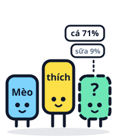

Ask Bit
Type a word or a whole question, and Bit points to the exact part of a video that explains it.
Word of the day
A/B test
Half the users see the old version, half see the new one; whichever gets better results wins.
AI basics 15 terms
- Adaptive learningA machine learns how you learn: get it right and it gets harder, get it wrong and it goes back to the basics you're missing, like a private tutor.Video #04 ›
- LiDARMeasuring distance with light: send a laser flash, time the trip there and back, and build a 3D map for AI to read.Video #05 ›
- Machine learningInstead of writing rules by hand, you give the machine lots of examples and let it find the patterns itself.Video #10 ›
- Recommendation algorithmMachine learning that uses how long you stop to watch, and what people like you enjoy, to guess which clip will keep you watching longest.Video #11 ›
- ModelAI's "brain"; one company offers small tiers that are fast and cheap, middle tiers that are balanced, and large tiers that are powerful but pricey.Video #18 ›
- GPUgraphics chipA special kind of chip for running and training AI, lined up by the tens of thousands in data centers.Video #43 ›
- Speech-to-textAI turns sound into a spectrogram picture and reads the shapes into words; double-check names and numbers.Video #50 ›
- Text-to-speechAI turns text into sounds, adds intonation, then makes a sound wave; a few seconds of a voice sample is enough to clone a voice.Video #51 ›
- Voice modeTalking with AI out loud like a phone call; it answers in about half a second, and you can interrupt.Video #52 ›
- MultimodalAI that takes in text, images and sound in one brain, because everything gets cut into tokens.Video #55 ›
- APIThe door apps use to send questions over the internet to an AI model and get answers back; most AI apps rent their model through this door.Video #80 ›
- AutoscalingAt peak hours, the system turns on more machines by itself to keep up; if it can't, you see "overloaded, try again later".Video #80 ›
- CloudBig AI doesn't live in your phone; it runs in faraway data centers, reached over the internet.Video #80 ›
- Data centerBuildings full of server racks with GPUs, where big AI models run; they use as much power as a whole neighborhood.Video #80 ›
- On-device AISmall models that run right on your phone: no internet needed, your data stays on the device, but they're less smart.Video #80 ›
Inside the AI brain 12 terms
- Fib Cloud HallucinationAI gives a wrong answer that sounds true, because when it doesn't know, it still guesses whatever sounds most likely.Video #08 ›
-

Token Kids Context windowAI's "desk": it sees whatever is on the desk, and when the desk is full, old sheets get pushed off and AI stops noticing them.Video #09 › - Token Kids TokenThe pieces AI cuts a sentence into before reading, each turned into a number; length and price are both counted in tokens.Video #19 ›
-
 EmbeddingAI places every word on a giant map where words with similar meanings sit close together; that position is the meaning.Video #20 ›
EmbeddingAI places every word on a giant map where words with similar meanings sit close together; that position is the meaning.Video #20 ›
-
AttentionEach word "looks" at every other word in the sentence and scores which ones matter most to it; this is the heart of today's chatbots.Video #21 ›
-
Knowledge cutoffThe day AI stopped reading its training data; it knows nothing about what happened after that day.Video #22 ›
-
PretrainingThe stage where AI reads a huge amount of text and learns by guessing the next word, repeated billions of times.Video #22 ›
-
RLHFAI writes a few answers and people score which is better; helpful, honest answers get rewarded, made-up ones lose points.Video #23 ›
-
TemperatureThe knob for chance when AI draws the next word: low means steady, high means creative but more likely to drift off topic.Video #24 ›
-
RAGLetting AI find the right passages in your documents and read them before answering, so it makes things up far less.Video #25 ›
-
Reasoningthinking modeAI writes a draft first: it breaks the problem into steps and checks itself before answering; slower, but better at hard problems.Video #26 ›
- Mixture of ExpertsMoEA model split into many small experts; each token only calls the few that fit best, so it's big but still fast.Video #117 ›
How AI learns 14 terms
- Artificial neuronTakes a few numbers, multiplies them by weights, adds them up and decides; surprisingly simple.Video #38 ›
- Neural networkThousands of artificial neurons stacked in layers, each layer passing its results to the next.Video #38 ›
- WeightsThe "knobs" inside AI; learning means the machine turns billions of them itself, a little at a time.Video #38 ›
- Losserror, loss functionA number measuring how wrong AI is compared with the right answer; the whole learning process is about pushing it down.Video #39 ›
- Gradient descentLike walking down a mountain blindfolded: feel which way lowers the error most, take a small step, and repeat millions of times.Video #40 ›
- BackpropagationThe mistake at the output is passed back through each layer of the neural network; knobs that caused more of the mistake get turned more.Video #41 ›
- OverfittingAI memorizes each training example: nearly perfect on familiar questions, wrong on new data.Video #42 ›
- Scaling lawPush up the knobs, the data and the computing power together, in balance, and the error drops quite steadily.Video #43 ›
- InterpretabilityThe research field that shines a light into the "black box" to find the concepts inside AI.Video #44 ›
- Fine-tuningExtra training for a model that has already learned, using a special set of examples, like taking a job course after high school.Video #113 ›
- Open-weightopen modelA model you can download with all its weights; fully open-source models also share their data and how they were trained.Video #114 ›
- DistillationA big model is the teacher, and a small model learns from how it answers; the result is a small, fast, cheap model that's still pretty smart.Video #115 ›
- Model collapseWhen AI only learns from AI-made data, it gets blurrier over time, like a photocopy of a photocopy.Video #116 ›
- Synthetic dataData made by AI to teach AI; only useful when filtered carefully and mixed with real data.Video #116 ›
Getting good answers 11 terms
- PromptThe message you send AI; include all five parts (role, context, task, format, limits) and AI gets closer to what you want.Video #03 ›
-
 Custom instructionsA note stuck on your assistant's desk: who you are, whether you want long or short answers, how to talk to you; AI reads it first every time.Video #27 ›
Custom instructionsA note stuck on your assistant's desk: who you are, whether you want long or short answers, how to talk to you; AI reads it first every time.Video #27 ›
- Few-shotGiving AI a few sample examples so it picks up the tone, length and layout you want.Video #101 ›
- Zero-shotAsking with no examples at all, so AI has to guess what you want and gives you an average, safe tone.Video #101 ›
- RoleTelling AI to play a specific role so it picks the right knowledge and tone; the clearer the role, the better.Video #102 ›
- System promptInstructions that sit above the whole conversation, like rules AI has to follow for every question.Video #102 ›
- Chain of thoughtTelling AI to "think step by step" so it writes out each step before answering; it guesses better and you can check it more easily.Video #103 ›
- Output formatSaying exactly how AI should answer: a table, a checklist, three bullet points, or JSON or CSV.Video #104 ›
- Prompt chainingSplitting a big task into small steps, with each step's result feeding into the next.Video #105 ›
- Self-critiqueAsking AI to point out the weaknesses in its own work, then write a better version.Video #106 ›
- Prompt templateA prompt with blanks to fill in, reused every week and improved after each use.Video #107 ›
Safety and scams 10 terms
- DeepfakeAI copying a person's voice and face, even live during a video call.Video #14 ›
- Red teamPeople who play the bad guys and try to trick AI into doing things it shouldn't, so holes get fixed early.Video #49 ›
- Prompt injectionStrange instructions hidden in data, like an email telling AI to send out your contacts, that trick AI into thinking they came from you.Video #75 ›
- GuardrailsA separate guard layer around the model: it blocks off-topic questions, hides sensitive information and checks answers before they reach you.Video #81 ›
- Input guardrailsChecking questions before they reach AI: hiding card numbers, staying on topic, blocking trick prompts.Video #81 ›
- PII maskingCard numbers, phone numbers and ID numbers are replaced with labels before they reach AI.Video #81 ›
- CitationThe answer says which document it came from, so you can open it and check.Video #82 ›
- Human in the loopFor real actions like sending money, AI only gets things ready, and a person has to click confirm.Video #82 ›
- Output guardrailsChecking answers before they're sent: any careless promises, someone else's information leaked, or missing sources?Video #82 ›
- Voice cloneAI copying someone's voice from just a short recording; scammers use it to call family members asking for money fast.Video #108 ›
Agents and tools 18 terms
- AI agentAI that doesn't just answer, but is given tools to do work for you over many steps, and stops to ask you before anything important.Video #16 ›
-
ProjectA private workroom for one task: its own instructions, documents and every related chat, all in one place.Video #29 ›
-
Scheduled taskSay it once, "every Monday at 7 a.m., do this", and AI does it on time and lets you know.Video #31 ›
- ArtifactA finished piece that opens right next to Claude's chat: a document, slides, a small spreadsheet or a tool you can click.Video #64 ›
- Claude DesignClaude's design tool: chat on the left, canvas on the right; describe it in words and get slides, a landing page or a prototype.Video #65 ›
- Design systemSave your colors, fonts and logo once, and everything you make afterwards matches your brand automatically.Video #65 ›
- MemoryGeneral things about you that an AI app remembers between chats; you can view, edit or delete them.Video #66 ›
- ConnectorA bridge that lets AI into Gmail, Google Drive, your calendar or other tools; many connectors run on MCP.Video #67 ›
- SkillA recipe card for Claude: the steps and a layout template; when a task matches, Claude takes it out and uses it.Video #67 ›
- CoworkClaude's AI agent: hand it a whole long task, and it makes a plan and works through it step by step in the cloud.Video #68 ›
- Claude CodeClaude's coding agent: describe a job in plain words, and it writes the code, tests it and fixes bugs.Video #70 ›
- Tool callingAI writes a "request slip" (a tool call), the app does the job, then hands the result back for AI to answer.Video #72 ›
- MCPModel Context ProtocolA shared USB-C-style port for AI: any tool with an MCP server can plug into any AI app that supports MCP.Video #73 ›
- Multi-agentSplitting a big job among several agents working together; only worth it when the job splits into independent parts.Video #76 ›
- Orchestratorlead agentThe agent that makes the plan, splits work among subagents, then puts the results together for you.Video #76 ›
- SubagentA "worker" agent that takes one part of the job, has its own context window and tools, and sends back a short summary.Video #76 ›
- A2AAgent to AgentA shared standard that lets one company's agent hand work to another company's agent.Video #77 ›
- Error compoundingEach step being 95% right sounds great, but chain ten steps together and the whole thing is only about 60% right.Video #78 ›
Testing and running AI 18 terms
- BenchmarkAI's exam: thousands of questions with answers ready, and every AI takes the same test; each test only measures one skill.Video #45 ›
- Data contaminationAI's test questions slip into its training data, so it gets answers right by remembering, not understanding.Video #46 ›
- Goodhart's lawWhen a number becomes the goal, it stops measuring well.Video #46 ›
- EloA chess-style scoring system: winners gain points, losers lose some, and beating a strong opponent earns more.Video #47 ›
- LeaderboardA table ranking AIs by score; for example, Arena (formerly LMArena) collects millions of users' votes from blind matches.Video #47 ›
- A/B testHalf the users see the old version, half see the new one; whichever gets better results wins.Video #59 ›
- Eval setA set of real customer questions with the answers you want, used to grade an AI product every time you change it or switch models.Video #83 ›
- EvaluationRerunning the test set and scoring it before switching models or editing a prompt; it only goes live once it passes.Video #83 ›
- LLM as a judgeAI grading AIUsing an AI as the judge to grade answers against written criteria; fast, but people still need to double-check.Video #83 ›
- Regression testA new model has to redo the whole old test and be compared with the current model before it can replace it.Video #83 ›
- LoggingEvery question leaves a line in the log: the time, the question with private details hidden, the answer, how long it took and what it cost.Video #84 ›
- ObservabilityBeing able to see clearly inside an AI system, thanks to logs and traces.Video #84 ›
- TracingTying all the steps of one question into a single thread, to see what each step received and returned, and where the mistake was.Video #84 ›
- AlertEach metric has a red line; when the needle crosses it, an alarm rings so the person on call checks right away.Video #85 ›
- DashboardA screen showing an AI system's metrics: response speed, cost, refusal rate, and how often customers are unhappy.Video #85 ›
- DriftThe world changes and users ask new kinds of questions, but the AI system stays the same.Video #85 ›
- Feedback loopIncidents become lessons, and lessons become test questions: questions that caused problems are added to the eval set.Video #85 ›
- MonitoringTracking speed, cost and wrong-answer rates on a dashboard, so you know about problems before customers complain.Video #85 ›
Learning with AI 13 terms
- Simulation-based learningPracticing in made-up situations, seeing consequences right away without fear of mistakes, and repeating until it feels natural.Video #86 ›
- Virtual labDoing experiments on a screen, even changing things you can't change in real life; for example, the free PhET library.Video #87 ›
- Role-playAI plays an interviewer, customer or partner so you can practice conversations like they're real.Video #88 ›
- Branching scenarioAn exercise where each choice you make opens a different outcome, so you see the consequences for yourself.Video #89 ›
- Interactive simulationA small page with buttons, sliders and charts so you can drag, try and see for yourself; AI can build one in seconds.Video #90 ›
- DebriefAfter each simulation practice, looking back at where you went wrong and what you'll do differently next time.Video #91 ›
- Interactive learningTurning you from a watcher into a doer: answering questions mid-lesson, asking about hard parts, trying your own examples.Video #92 ›
- Retrieval practiceAnswering questions yourself helps you remember longer than rereading many times.Video #92 ›
- FlashcardCards with a question on one side and the answer on the other for review; AI can make them from your videos or documents.Video #93 ›
- TranscriptA video's speech as text; paste it into AI to turn the video into a lesson.Video #93 ›
- Socratic methodTeaching by asking questions back, so learners work out the answers themselves.Video #95 ›
- Study modeA mode where AI gives hints and asks you step by step instead of handing over the answer.Video #95 ›
- Integrated learningLearning several subjects at once through a real project, like planning a trip.Video #96 ›